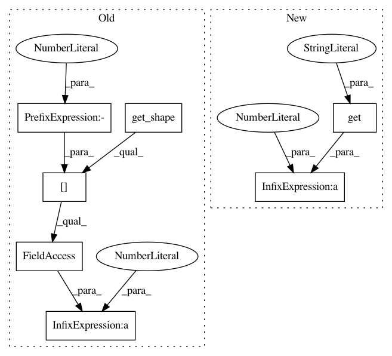

36cb3f7a2e3e1af5733dedb4420316bc50957927,dataset/models/tf/linknet.py,LinkNet,decoder_block,#Any#Any#Any#Any#,105
Before Change
-------
tf.Tensor
num_filters = inputs.get_shape()[-1].value // 4
return conv_block(inputs, "cna tna cna", [num_filters, num_filters, filters], [1, 3, 1],
name=name, strides=[1, 2, 1], **kwargs)
@classmethod
After Change
-------
tf.Tensor
num_filters = cls.get_channels_shape(inputs, kwargs.get("data_format")) // 4
return conv_block(inputs, "cna tna cna", [num_filters, num_filters, filters], [1, 3, 1],
name=name, strides=[1, 2, 1], **kwargs)
@classmethod
In pattern: SUPERPATTERN
Frequency: 3
Non-data size: 7
Instances
Project Name: analysiscenter/batchflow
Commit Name: 36cb3f7a2e3e1af5733dedb4420316bc50957927
Time: 2017-12-07
Author: a.kozhevin@analysiscenter.ru
File Name: dataset/models/tf/linknet.py
Class Name: LinkNet
Method Name: decoder_block
Project Name: analysiscenter/batchflow
Commit Name: b4479e2c2f165a3468b9c8839710794008b21a58
Time: 2017-12-12
Author: a.kozhevin@analysiscenter.ru
File Name: dataset/models/tf/linknet.py
Class Name: LinkNet
Method Name: decoder_block
Project Name: analysiscenter/batchflow
Commit Name: da6c8b0423238e90185e776b5f217ee02c98f6ba
Time: 2017-12-08
Author: a.kozhevin@analysiscenter.ru
File Name: dataset/models/tf/linknet.py
Class Name: LinkNet
Method Name: decoder_block